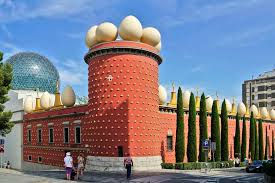

Dalí Theatre-Museum: Created it himself in his hometown, and he's also buried here The site is known for housing the broadest range of work by the artist, from his earliest artistic experiences to works that he created during the last years of his life. Several works on permanent display were created specifically for the museum. The world's largest surrealist structure is the building itself.
